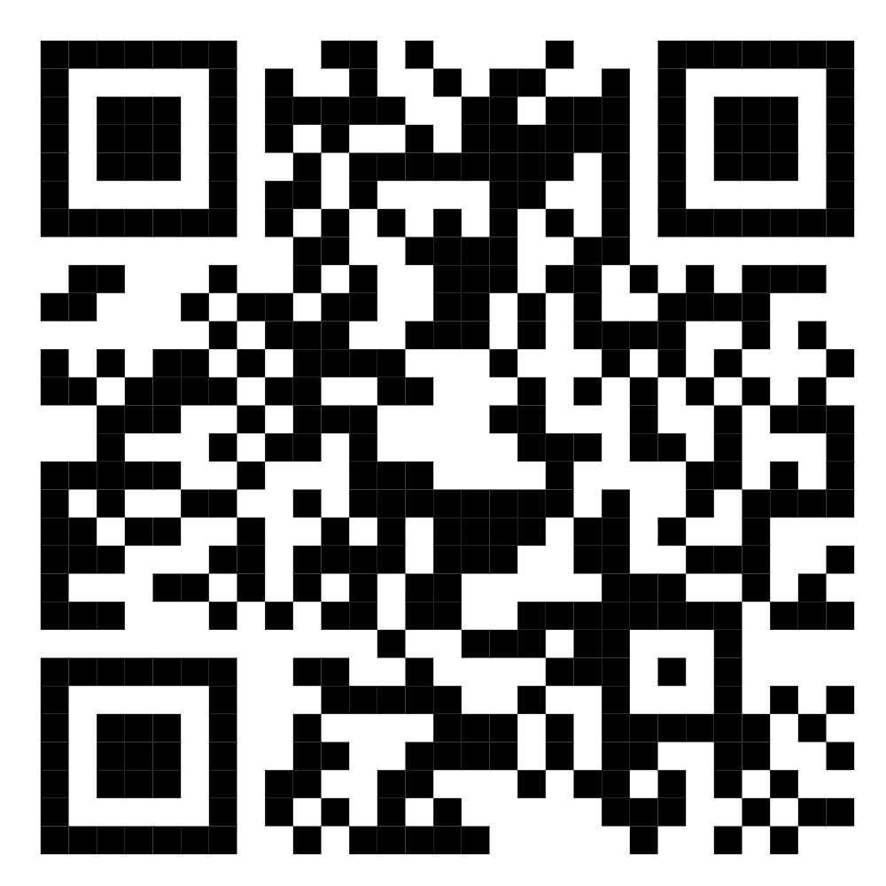

Halo, Saya Wahyu Ardian
Graphic Designer • Visual Editor • Digital Business Student
Saya adalah mahasiswa Universitas Lancang Kuning dengan keahlian mendalam di bidang Visual Editing, Desain Grafis, dan Fotografi Acara. Berpengalaman menghasilkan materi promosi kreatif, media cetak, serta dokumentasi visual bernilai tinggi.

Tentang Saya
Mengenal lebih dekat latar belakang, keahlian, dan komitmen profesional saya.
Profil & Ringkasan
Saya adalah mahasiswa aktif di Universitas Lancang Kuning jurusan Bisnis Digital (Angkatan 2024). Memiliki ketertarikan mendalam dan pengalaman langsung dalam industri kreatif sebagai Desain Grafis dan Visual Editor.
Saya telah berkecimpung dalam dunia visual mulai dari percetakan fisik (Family Printing), produksi konten visual digital (CMB MEDIA), hingga fotografi acara resmi berskala regional (PGRI Riau Porsenijar 2026 dan Wisuda UNILAK). Kombinasi antara estetika visual dan pemahaman strategi bisnis digital menjadi nilai tambah dalam setiap proyek yang saya kerjakan.
Informasi Kontak & Domisili
- Domisili PT. Bina Pitri, Kab. Kampar, Prov. Riau
- Kampus Universitas Lancang Kuning
- Email Wahyuofficial280803@gmail.com
- WhatsApp 083832412105
- Status Pekerjaan Terbuka untuk Freelance & Full-time
Pengalaman Kerja & Kepanitiaan
Rekam jejak kontribusi dalam dunia desain grafis, editing visual, dan dokumentasi media.
Bertanggung jawab penuh atas dokumentasi visual dan peliputan media pada perhelatan akbar Pekan Olahraga dan Seni (Porsenijar) PGRI Provinsi Riau 2026. Menghasilkan arsip foto berkualitas tinggi untuk publikasi pers, media sosial, dan materi dokumentasi resmi.
Mengemban tugas sebagai fotografer prosesi wisuda. Menangkap momen penting pimpinan universitas, para wisudawan, dan tamu kehormatan dengan standar komposisi visual yang rapi dan profesional.
Menjalankan peran krusial dalam perancangan materi editing visual digital untuk berbagai kebutuhan media dan promosi. Mengembangkan aset grafis media sosial, banner kampanye digital, infografis, dan penyelarasan tone warna (color grading) untuk konten multimedia.
Mengerjakan desain percetakan komersial meliputi spanduk, banner, baliho, kartu nama, brosur, stiker kemasan, dan media cetak lainnya. Berkomunikasi langsung dengan klien untuk menerjemahkan kebutuhan brand ke dalam visual yang siap cetak (pre-press color management).
Riwayat Pendidikan
Fondasi pendidikan formal yang membentuk pola pikir strategis dan kreatif.
Fokus mendalami transformasi digital, pemasaran digital (digital marketing), strategi e-commerce, analisis data bisnis, dan integrasi aset visual dalam ekosistem bisnis modern.
Menyelesaikan program studi kejuruan terapan untuk pengembangan kompetensi kerja profesional dan kesiapan industri karir.
Pendidikan menengah atas dengan keaktifan dalam kegiatan ekstrakurikuler serta eksplorasi awal minat di dunia multimedia dan seni visual.
Menyelesaikan pendidikan dasar lanjutan tingkat pertama.
Menyelesaikan pendidikan tingkat sekolah dasar dengan baik.
Keahlian & Kemampuan
Perpaduan keahlian teknis (Hard Skills) dan kemampuan interpersonal (Soft Skills).
Hard Skills (Teknis)
Soft Skills (Karakter & Kerja)
Galeri Portofolio & Karya
Koleksi karya dokumentasi, desain grafis, editing visual, dan pengalaman media.
Scan QR Code untuk Melihat Portofolio & Karya
Pindai kode QR di samping menggunakan kamera smartphone Anda untuk mengakses langsung seluruh direktori karya visual, proyek editing, dan sertifikasi Wahyu Ardian.


QR Code Portofolio & Karya
Pindai kode QR ini menggunakan smartphone untuk akses instan ke seluruh portofolio digital, sertifikasi, dan karya proyek Wahyu Ardian.

Dokumentasi Media Porsenijar 2026
Peliputan resmi Pekan Olahraga dan Seni PGRI se-Provinsi Riau 2026. Menangkap momen pertandingan, ekspresi atlet, dan seremonial pembukaan.

Dokumentasi Wisuda UNILAK
Fotografi resmi prosesi wisudawan dan pimpinan kampus Universitas Lancang Kuning dengan tata pencahayaan dan komposisi profesional.

CMB Media Digital Campaigns
Editing konten visual dan desain promo digital selama 2022-2024 untuk mendongkrak engagement dan visual branding.

Family Printing Publications
Desain spanduk, banner, brosur, kartu nama, dan materi promosi fisik dengan akurasi warna pra-cetak (pre-press).

Bisnis Digital & Brand Identity
Penerapan konsep visual identity dan strategi digital marketing terpadu untuk kebutuhan brand modern.

Exp Lane Specialist & Gaming Asset
Keahlian taktikal Exp Lane: disiplin laning, rotasi makro-mikro, ketenangan eksekusi clutch di bawah tekanan kompetisi.